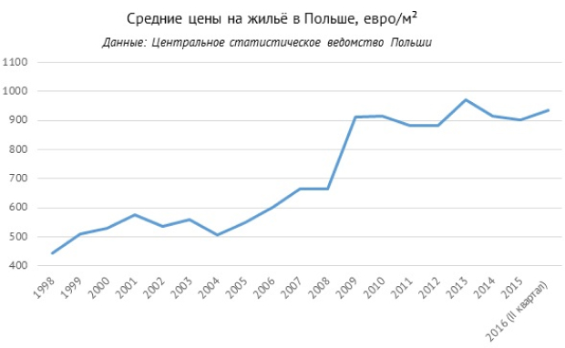

Как выбрать доходный объект в Польше
Читать 5 минут
Международные инвесторы всё чаще присматриваются к Польше: есть основания предполагать, что в 2016−2020 годах рынок недвижимости этой страной станет одним из самых востребованных в Европе.

Рост экономики, увеличение объёма инвестиций, способствующее повышению цен, относительно высокие ставки доходности и стабильность польского рынка недвижимости в целом вселяют в продавцов и покупателей уверенность в завтрашнем дне.
Благополучная экономика: прогноз на пятилетний рост ВВП
Польша — одна из немногих европейских стран, пережившая финансовый кризис 2008 года, не уйдя в рецессию. Экономика этой страны — восьмая по величине в ЕС, а её ВВП стабильно увеличивается с 2013 года и, по прогнозам экспертов, как минимум до 2020 года годовые темпы роста составят не менее 3,3 %. К тому же госдолг Польши — 50 % от ВВП — значительно ниже аналогичного среднего показателя по ЕС (87 %). В стране растут как промышленное производство, так и торговый оборот, а также внутренний спрос на товары. Рост экономики Польши связан с увеличением покупательной способности населения и с привлечением в страну инвестиций, что означает хорошие перспективы для местного рынка недвижимости.

Другой важный показатель — уровень безработицы — в Польше имеет тенденцию к понижению: по прогнозам
аналитиков, доля незанятых людей опустится с 9,1 % в 2016 году до 6,9 % в 2020-м. Для инвесторов это
означает в первую очередь уменьшение рисков при сдаче недвижимости в аренду. Помимо этого, рынок труда
Польши привлекает бизнесменов большим количеством высококвалифицированных кадров с университетским
образованием и знанием иностранных языков, а также относительно низкими зарплатными ожиданиями по
сравнению со странами Западной Европы.
Ещё одна позитивная тенденция в польской экономике — сокращение базовой ставки, которая в марте 2015 года
была понижена до 1,5 %, то есть до рекордного уровня за всю историю страны. Благодаря снижению базовой
ставки уменьшаются и ставки по ипотеке, что, как правило, приводит к повышению спроса на рынке
недвижимости и росту цен на жильё.
Растущие инвестиции: в 2016 году может быть достигнут 10-летний максимум
Инвесторы, заметившие позитивные тенденции в польской экономике, уже начали активно вкладывать средства в недвижимость этой страны. Так, в 2015 году в коммерческие объекты здесь было вложено 4,05 млрд евро — больше, чем в любой другой год начиная с 2006-го. В I половине 2016 объём инвестиций превысил 2 млрд евро (что уже более чем в 2,5 раза больше, чем в I половине 2015). К концу года эта цифра может достигнуть 4,5 млрд евро и таким образом побить 10-летний рекорд.
Достижению рекордного показателя будут способствовать два основных фактора. Во-первых, на рынке наблюдается высокая активность инвесторов, ещё не закрывших сделки, но уже ведущих переговоры о покупке. Во-вторых, международные инвесторы всё чаще присматриваются к развивающимся рынкам по мере того, как доходность объектов в Западной Европе сокращается. Эксперты сходятся о мнении, что после «Брекзита» многие покупатели инвестиционной недвижимости в качестве альтернативы Великобритании могут выбрать именно Польшу, так как это крупнейший рынок Центральной Европы, на который приходится половина инвестиций в регионе.
Возможность заработать: ставки доходности выше, чем в других европейских странах
Цены на недвижимость в Польше постепенно растут, при этом ставки аренды в 2015–2016 годах оставались стабильными (в секторе торговой недвижимости) или снижались (в секторе офисных и складских объектов). Поэтому, как и в большинстве других европейских стран, на польском рынке сокращаются ставки доходности. Так, доходность офисов в Варшаве во II квартале 2016 понизилась с 7,00 % (пиковое значение) до 5,50 %, доходность стрит-ретейла — с 9,50 до 5,25 %, складов — с 8,50 до 6,75 %.
Однако, даже несмотря на сокращение доходности, отношение выручки от аренды к стоимости недвижимости в Польше выше, чем в других странах. Например, офисы премиум-класса в Варшаве приносят в среднем 5,50 % годовых, а в Праге — 5,00 %, в Вене — 4,00 %, в Берлине — 3,90 %.
Стабильный рынок: за 20 лет в Польше не было обвала цен на жильё
Как известно, недвижимость может приносить не только доход от аренды, но и от перепродажи. Польша предлагает инвесторам неплохие возможности для заработка на приросте стоимости: рынок жилой недвижимости этой страны отличается относительной стабильностью: в частности, здесь не было такого обвала цен, как, например, в Греции и Испании, где недвижимость с 2007 года подешевела на 40 %. Периоды снижения цен на польском рынке продолжались в течение максимум года-двух, после чего снова начинался рост.
Цены на жильё в Польше росли непрерывно в течение шести лет до 2010 года, после чего наблюдались колебания в пределах от -6 до +10 % в год. С 2014 по 2015 годы квадратный метр в стране подешевел в среднем на 1 %, однако в 2016-м снова наметился рост. Таким образом, за 10 лет жильё подорожало на 55 %.
Росту цен на жильё в Польше способствуют низкие ставки по ипотеке, а также льготная программа для заёмщиков моложе 35 лет (Mieszkanie dla Młodych, MdM), покупающих первое жильё. Программа предполагает субсидии в размере 10 % для семей без детей и одиноких людей, а также в размере 15 % для семей с детьми.
Средняя цена квадратного метра в Польше (934,5 евро) значительно ниже, чем в других странах Европы. Для сравнения, в Испании жильё стоит в среднем 1 600 евро/м², в Германии — 2 400 евро/м². Впрочем, как и везде цены в Польше значительно варьируются в зависимости от региона и конкретного города. Например, дороже всего квадратный метр стоит в Варшаве (около 2 тыс. евро) и Кракове (1 600 евро), дешевле всего — в городе Зелёна-Гура (в среднем менее 800 евро).
Таким образом, жильё в Польше привлекает инвесторов дешевизной и возможностью впоследствии заработать на росте цен.
Во что инвестировать
Варшава — крупнейший деловой и финансовый центр как Польши, так и всей Центральной и Восточной Европы. В этом городе находятся офисы крупных международных компаний, застройщиков и инвестиционных фондов. Другие города Польши также интересны иностранным инвесторам. В семёрку крупнейших рынков недвижимости страны помимо Варшавы входят Краков, Вроцлав, агломерация Труймясто (Гданьск, Гдыня, Сопот и несколько меньших городов и предместий), Катовице, Познань и Лодзь.
Крупнейшие офисные рынки Польши — Варшава и Краков. Эти же города востребованы и у покупателей жилья. Торговые объекты привлекают больше всего капитала в Кракове, Познани и Труймясте. Инвестиции в склады концентрируются во Вроцлаве и Труймясте.
Больше всего инвестиций на рынке Польши (55 %) в 2015 году пришлось на торговую недвижимость, которая привлекает покупателей ростом арендных ставок и активным строительством. В офисы было вложено 32 % капитала — этот сектор отличается небывалым спросом на аренду и рекордными объёмами строительства. Складские объекты, привлёкшие в 2015-м 12 % инвестиций, также популярны у инвесторов благодаря высокому спросу на аренду.
Чего ожидать в будущем
Прогнозируемый рост ВВП и потребительского спроса в Польше идут рука об руку с повышением активности на рынке коммерческой недвижимости в краткосрочной и среднесрочной перспективе. Помимо этого, об оживлении рынка говорит рекордный спрос на офисы и склады, а также рост объёмов строительства в секторе доходных объектов.
Инвесторы рассматривают Польшу как стабильный рынок. Предложение коммерческой недвижимости в Варшаве и других городах страны всё ещё формируется, что свидетельствует о наличии потенциала для дальнейшего расширения рынка.
Основными тенденциями 2016 года на рынке недвижимости Польши станут:
- сокращение доходности: ставки аренды имеют тенденцию к снижению, поэтому доходность может продолжить снижаться;
- увеличение разницы между ставками аренды для объектов премиум-класса и низкокачественных объектов;
- ещё большее смещение интереса инвесторов в сторону провинциальных городов (Гданьск, Лодзь, Познань и т. п.).